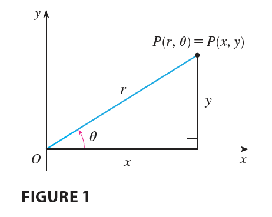
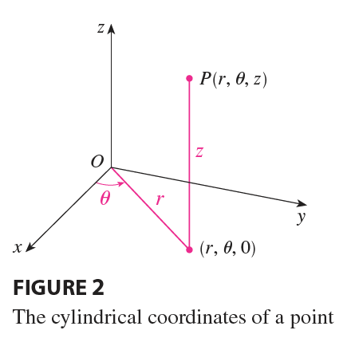

In plane geometry the polar coordinate system is used to give a convenient description of certain curves and regions. (See Section 10.3.)

Figure 1 enables us to recall the connection between polar and Cartesian coordinates. If the point P has Cartesian coordinates \((x, y)\) and polar coordinates \((r, \theta)\), then, from the figure,
\[ x = r \cos \theta \qquad y = r \sin \theta \]
\[ r^2 = x^2 + y^2 \qquad \tan \theta = \frac{y}{x} \]
In three dimensions there is a coordinate system, called cylindrical coordinates, that is similar to polar coordinates and gives convenient descriptions of some commonly occurring surfaces and solids. As we will see, some triple integrals are much easier to evaluate in cylindrical coordinates.
In the cylindrical coordinate system, a point P in three-dimensional space is represented by the ordered triple \((r, \theta, z)\), where r and \(\theta\) are polar coordinates of the projection of P onto the xy-plane and z is the directed distance from the xy-plane to P. (See Figure 2.)

To convert from cylindrical to rectangular coordinates, we use the equations
\[ x = r \cos \theta \qquad y = r \sin \theta \qquad z = z \tag{1} \]
whereas to convert from rectangular to cylindrical coordinates, we use
\[ r^2 = x^2 + y^2 \qquad \tan \theta = \frac{y}{x} \qquad z = z \tag{2} \]
EXAMPLE 1 (a) Plot the point with cylindrical coordinates \((2, 2\pi/3, 1)\) and find its rectangular coordinates. (b) Find cylindrical coordinates of the point with rectangular coordinates \((3, -3, -7)\).